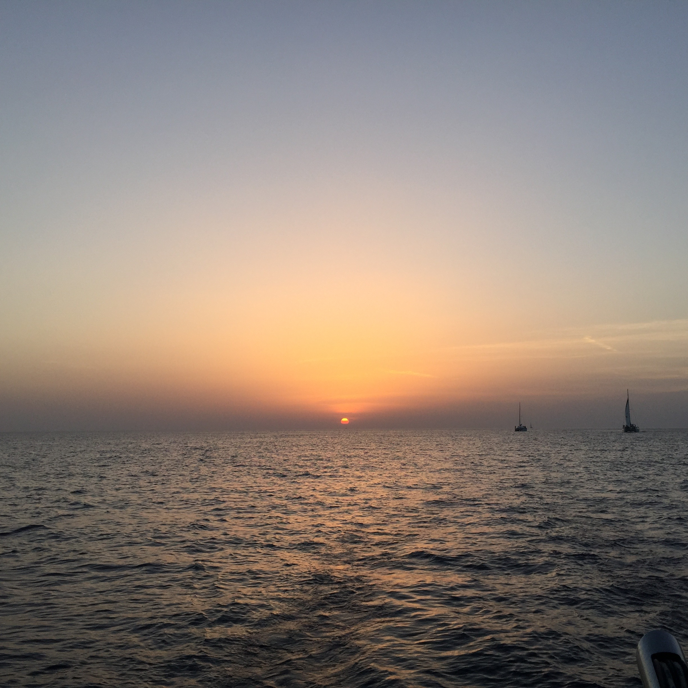
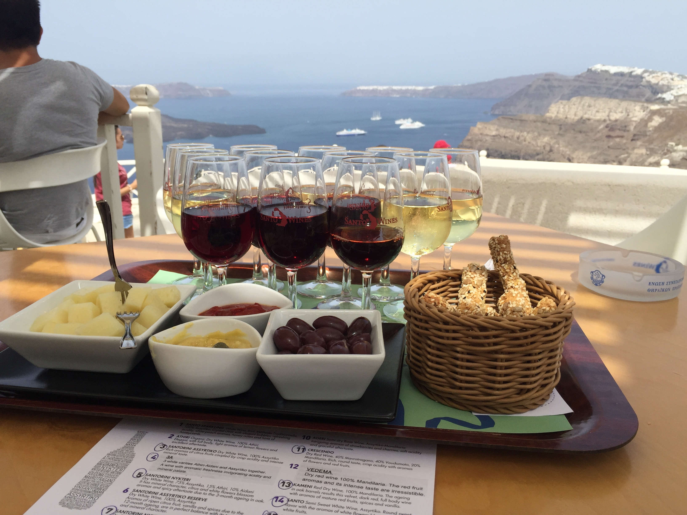
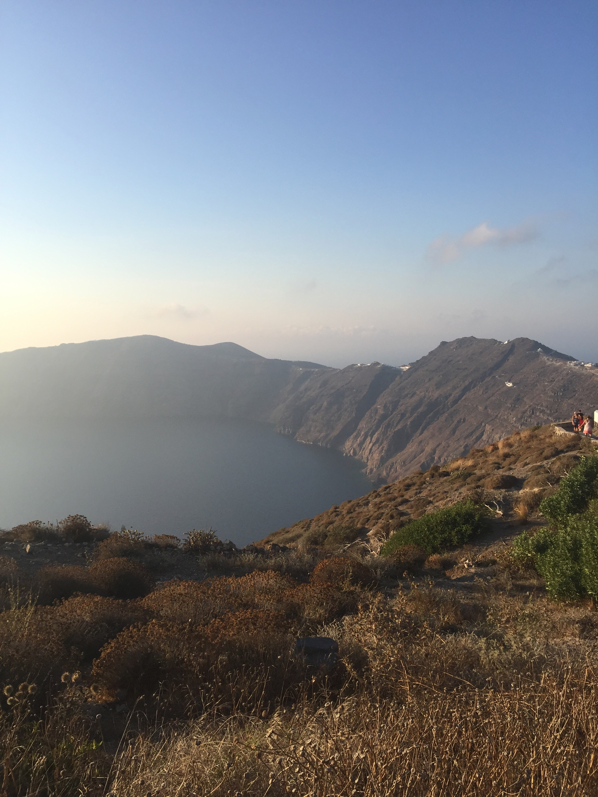
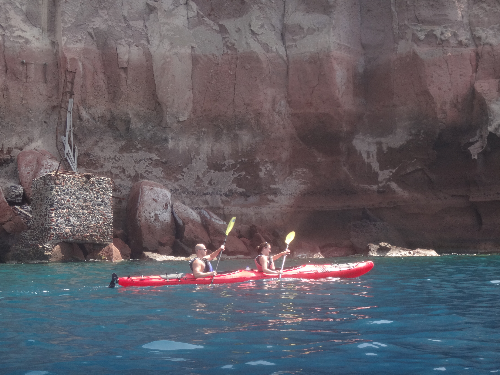
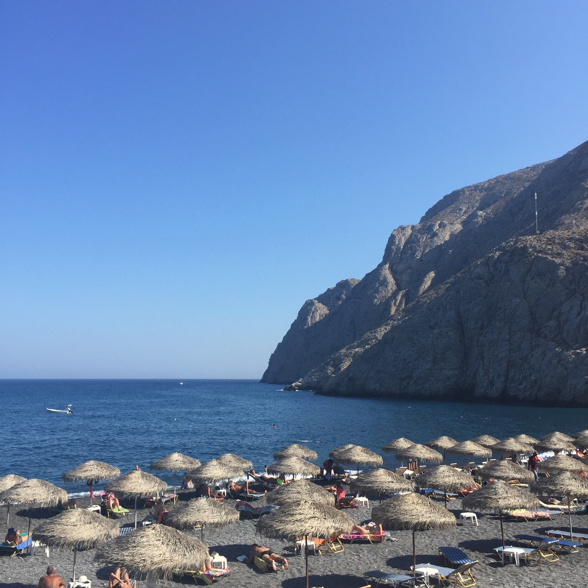

In August 2015, I was able to take a trip to Santorini which has been my favorite place we have traveled. We stayed for 10 days, traveling around the small island after first stopping in Athens for a day. We were able to stay near the beach, near the cliffside, and finally in the largest city, Fira.
Sailing
One evening, we embarked on a sunset sail where we enjoed food, drinks, snorkeling, swimming, and a beautiful view of the sunset. We stopped at the "hot springs" for swimming (which was really just slightly warmer water). We met a lot of fun people on the sail and went out for drinks afterwards with the new captain.
Winery
Santorini has many wineries to chose from, but we chose to visit one of the larger wineries:Santo. There was an amazing view of the volcano and we chose a wine tasting that include a "sampling" of twelve(!) different wines for only 20 €. To read more about Santo winery, you can click the link below.
Hiking
We were able to go hiking several times during our trip to Santorini. Sometimes it was on purpose and other times it was because the transportation never arrived (the buses don't neccessarily stop for you). Our second day there we went for a hike up to ancient Thira.
Kayaking
One of the days that we were in Santorini we went on an organized kayaking trip with a group of people. The best part of the trip was stopping at a secluded beach only accessible by boat and finding a small chapel in the side of the cliff. We ate lunch and then returned back. The trip was also very informative as the guides discussed how terrible pollution/litter is on the islands and talked about how much trash is cleaned up and how it affects wildlife.


Beach
Because of Santorini's volcano, the beaches in Santorini are mostly black Sand beaches. While the beaches are not neccessarily what Santorini is known for, we had a nice time realzing in the sun.
